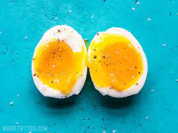

Soft Boiled Egg

Description
This is an amazing addition to ramen and instant noodles.
For this recipe, you will need:
Ingredients:
- Egg(As much as you need)
- Salt
Steps:
- Add about three cups to a pot.
- Add salt
- Heat it until it is boiling.
- Add the egg.
- Boil about 7 minutes
- Put the eggs in an ice bath.
- Remove the shells and we have a lovely creamy egg./